OUR POINT OF VIEW
제주의 맛보다 먼저,
그 맛을 만든 삶을 봅니다.
한 재료를 채취하고, 다듬고, 나누어 먹어온 제주 사람들의 시간을 따라가는 로컬푸드 디지털 도감입니다.
34개의 질문 펼쳐보기 ↓ALL 34 QUESTIONS
제주 식탁의
서른네 가지 질문
익숙한 음식의 이름을 누르면 재료에서 사람, 조리와 문화로 이어지는 이야기가 시작됩니다.
34편을 보고 있습니다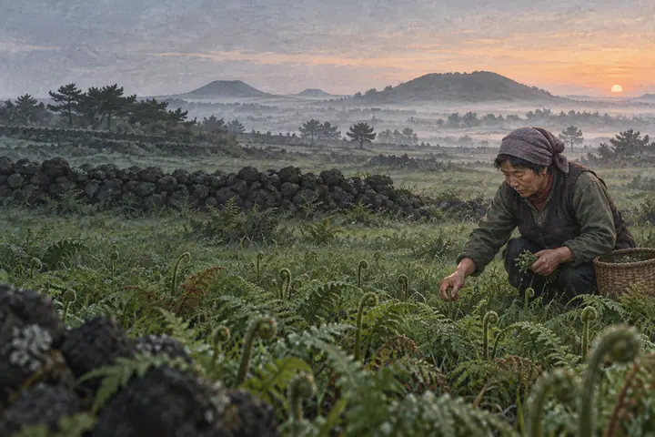
제주 고사리는
왜 유명할까?
화산회토와 고사리장마, 새벽 채취에서 고사리육개장까지
도감 읽기 ↗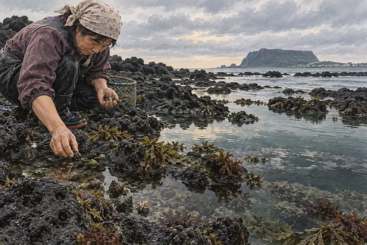
보말과 골뱅이는
어떻게 다를까?
여러 고둥을 품은 제주어와 조간대 채취, 세 그릇의 음식
도감 읽기 ↗흑돼지에는
왜 멜젓일까?
멜이라는 제주어와 발효의 감칠맛, 불판 위 작은 종지
도감 읽기 ↗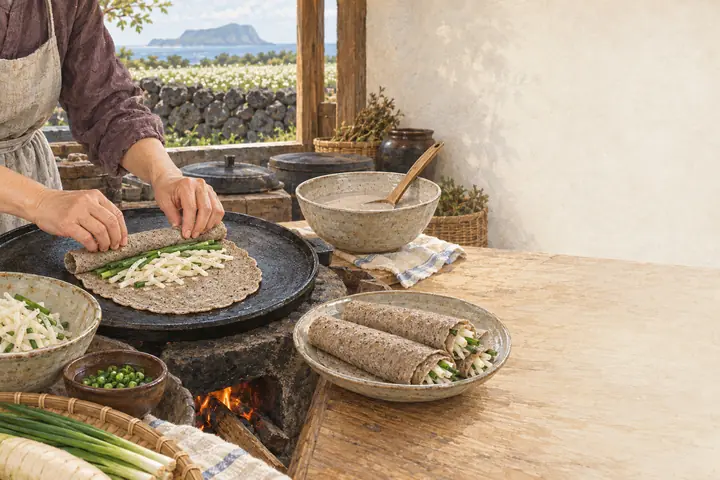
메밀전병에는
왜 무채를 넣었을까?
제주 메밀의 환경과 여러 이름 이야기, 잔칫상의 빙떡
도감 읽기 ↗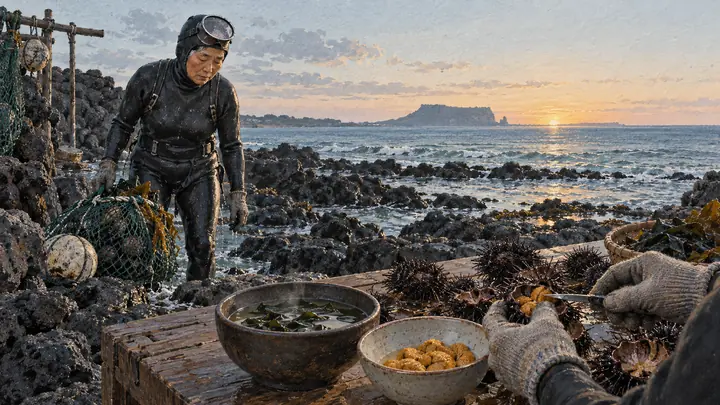
해녀의 성게가
식탁에 오기까지
물때와 물질, 선별과 손질을 지나 미역국 한 그릇으로
도감 읽기 ↗돔베고기는
도마 위 수육일까?
돼지 한 마리를 삶고 고기반으로 나누던 제주 잔치의 구조
도감 읽기 ↗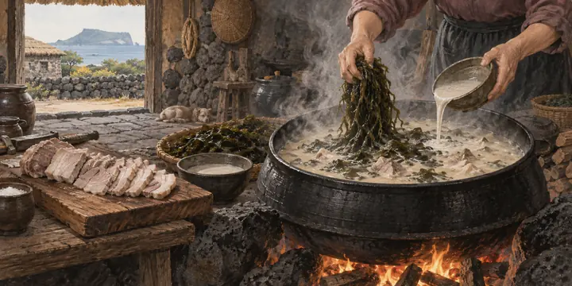
몸국에는 왜
모자반을 넣을까?
돼지고기 국물과 몸, 메밀가루가 만난 잔칫날 한 솥
도감 읽기 ↗자리돔은 왜
뼈째 먹었을까?
작은 생선의 촘촘한 칼질과 된장·식초 물회, 자리젓
도감 읽기 ↗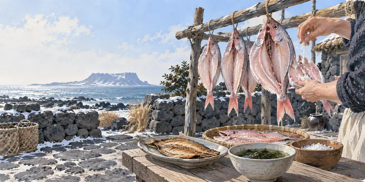
옥돔은 왜
말려 먹었을까?
귀한 생선을 저장하고 의례와 선물로 나눈 건조의 시간
도감 읽기 ↗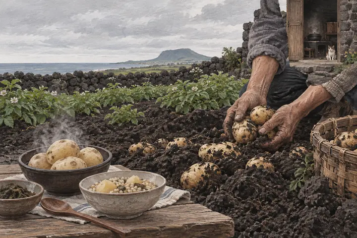
감자는 어떻게
지슬이 되었을까?
제주어와 밭농사, 끼니와 구황, 제주4·3의 기억
도감 읽기 ↗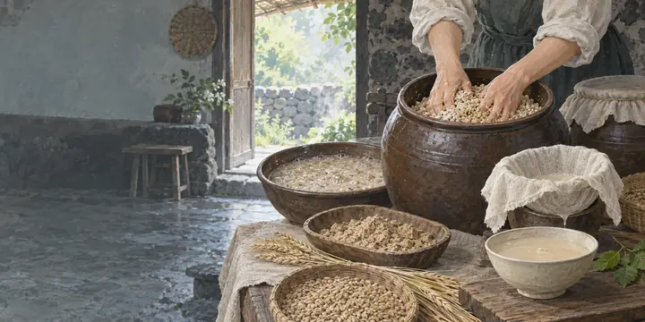
쉰 밥은 어떻게
음료가 되었을까?
남은 밥과 누룩이 달고 새콤한 쉰다리가 되는 과정
도감 읽기 ↗왜 꿩으로
엿을 만들었을까?
곡물의 단맛에 고기를 넣어 오래 남긴 희귀한 음식
도감 읽기 ↗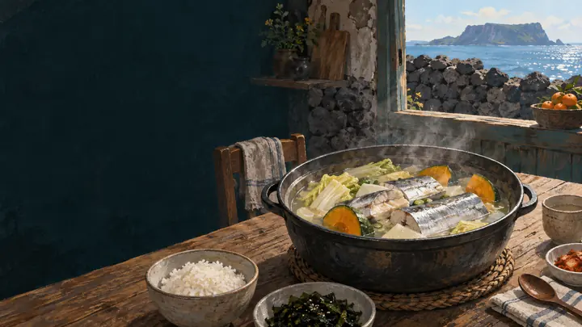
제주 갈치는 왜
국으로도 끓일까?
신선한 갈치와 호박·배추가 만드는 담백한 집밥
도감 읽기 ↗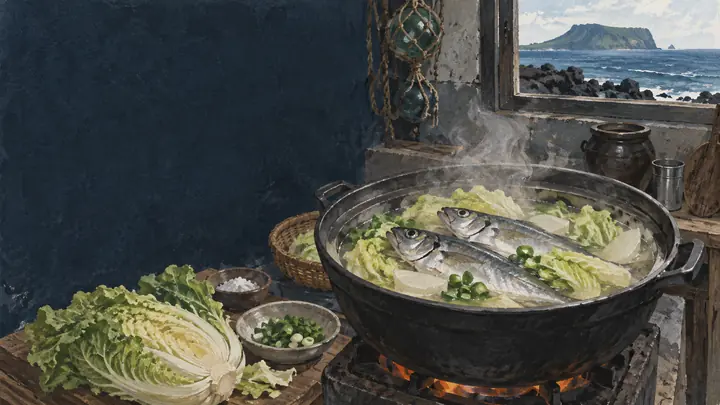
각재기국은 왜
맑고 담백할까?
전갱이와 배추, 손질과 선도가 양념이 되는 국
도감 읽기 ↗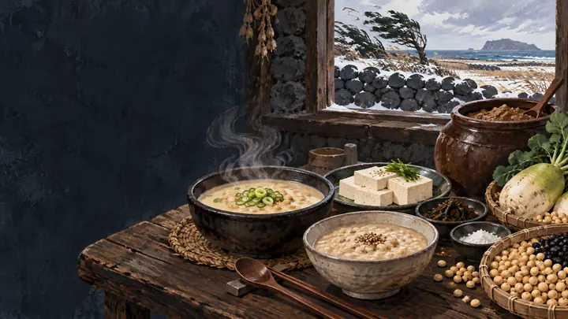
깅이죽에서
깅이는 무엇일까?
작은 게를 통째로 찧고 걸러 고소한 죽으로
도감 읽기 ↗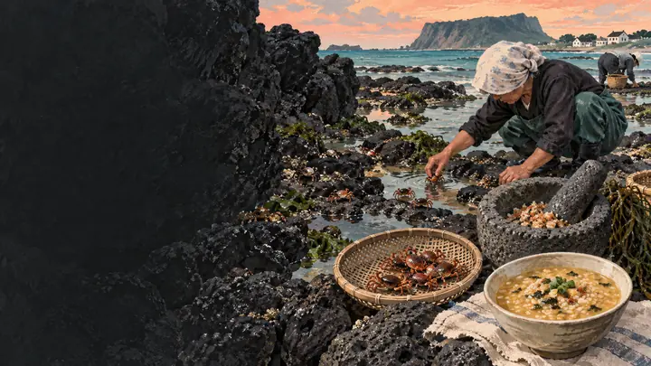
제주의 콩은
반찬이었을까?
콩국과 죽, 두부와 장으로 한 끼를 지탱한 밭작물
도감 읽기 ↗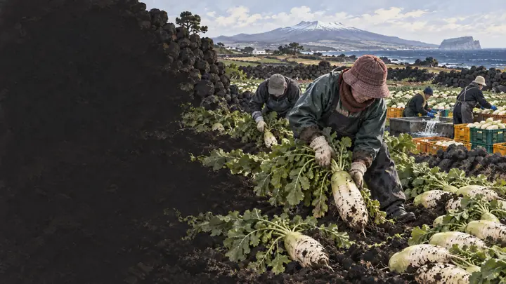
월동무는 왜
겨울에 더 달까?
노지 월동과 저온 적응, 무에서 빙떡 속까지
도감 읽기 ↗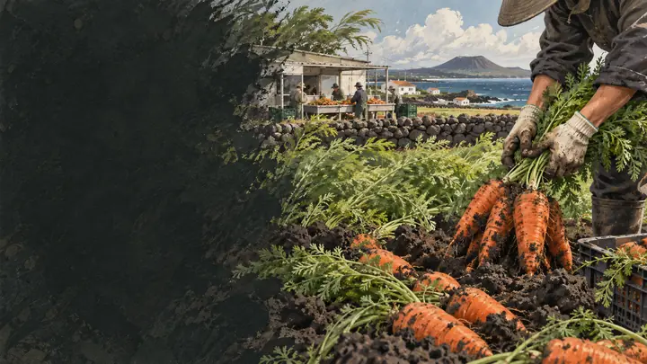
구좌 당근은 어떻게
상징이 되었을까?
화산회토 밭과 농가의 재배·세척·가공
도감 읽기 ↗제주 한치는 왜
여름밤의 음식일까?
집어등 조업에서 회와 물회로 이어지는 짧은 계절
도감 읽기 ↗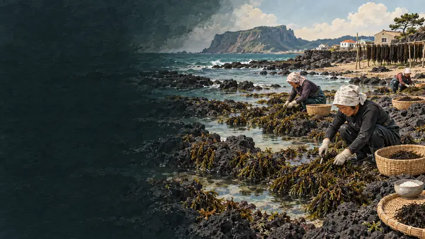
톳은 반찬일까,
생존 식재료였을까?
제철 해조류를 말려 밥과 반찬으로 이어온 지혜
도감 읽기 ↗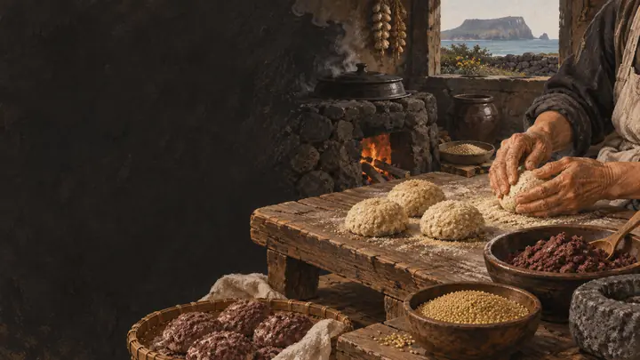
오메기떡은 원래
지금 모습이었을까?
차조의 떡에서 오늘의 팥고물 상품까지
도감 읽기 ↗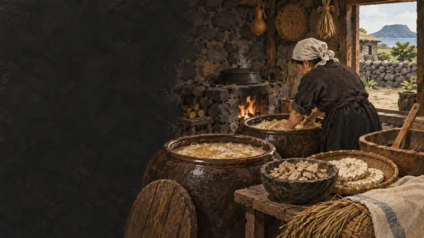
왜 좁쌀로
술을 만들었을까?
차조 떡과 누룩이 발효주가 되는 생활사
도감 읽기 ↗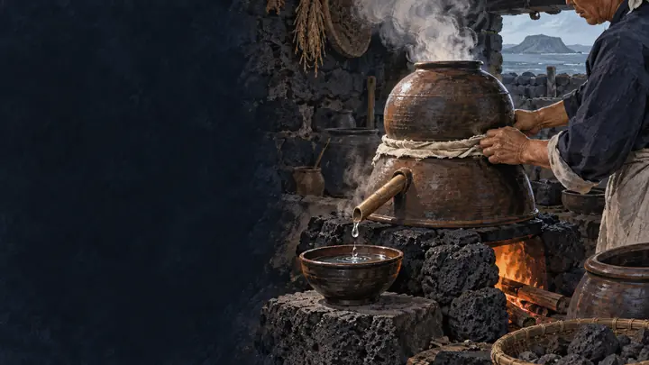
고소리술의 고소리는
무엇일까?
제주 옹기 증류기와 한 방울의 술
도감 읽기 ↗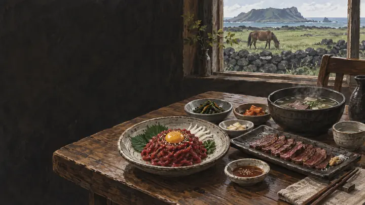
제주 사람들은 왜
말고기를 먹었을까?
말의 노동과 목축, 여러 부위의 조리
도감 읽기 ↗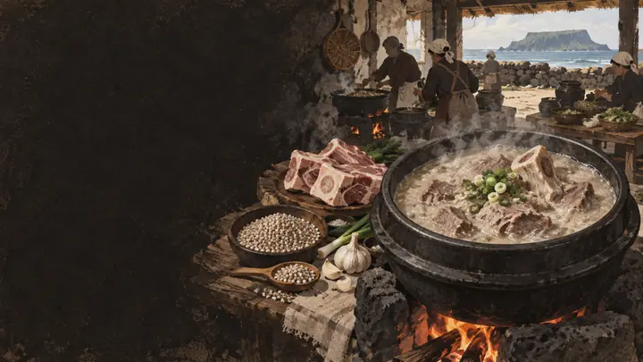
접짝뼈는
어느 부위일까?
어깨뼈 국물과 메밀이 만난 한 그릇
도감 읽기 ↗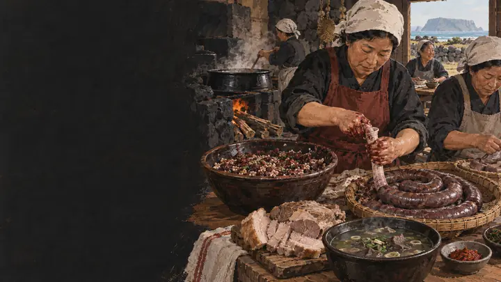
제주 수애는
일반 순대와 다를까?
잔칫날 돼지 피와 곡물을 나눈 방식
도감 읽기 ↗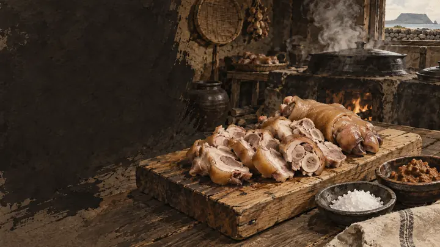
아강발은 족발과
어떻게 다를까?
작은 돼지족을 삶아 먹던 잔치의 끝
도감 읽기 ↗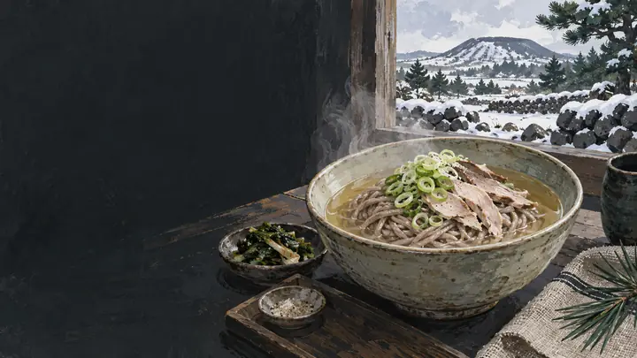
왜 꿩을 메밀국수에
넣었을까?
꿩 육수와 메밀면이 만난 겨울 한 끼
도감 읽기 ↗오분자기와 전복은
어떻게 다를까?
어린 전복이 아닌 별도의 작은 종
도감 읽기 ↗소라를 보면 해녀가
잡은 것인지 알까?
물질과 선별, 이력으로 읽는 바다의 경로
도감 읽기 ↗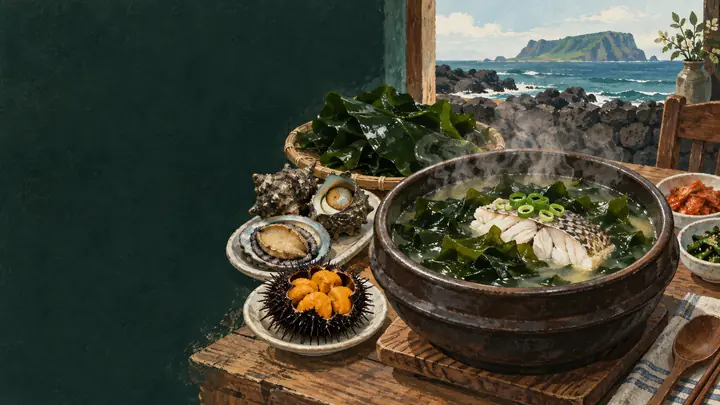
왜 미역국에도
생선을 넣을까?
옥돔·성게·조개가 내는 서로 다른 국물
도감 읽기 ↗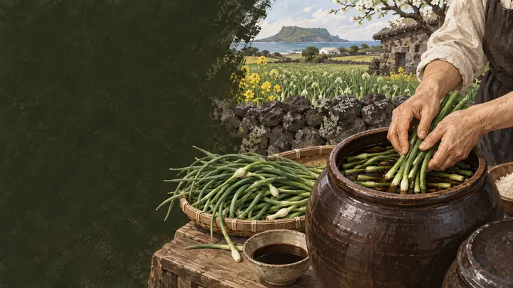
마농지는 왜 제주 밥상에
자주 올랐을까?
여린 마늘 줄기를 간장에 남긴 반찬
도감 읽기 ↗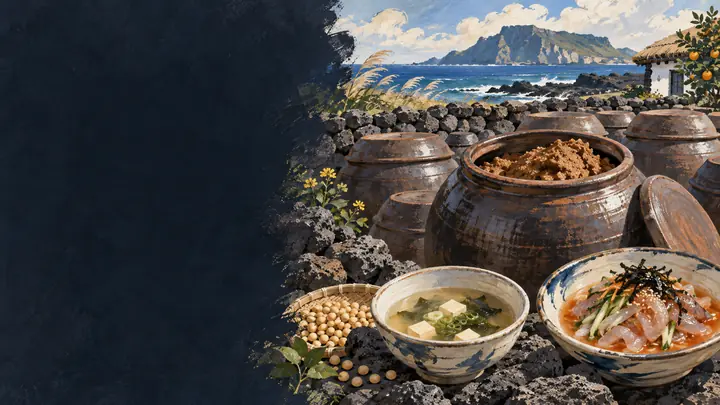
된장은 왜 국과 물회에
모두 쓰였을까?
따뜻한 국과 찬 물회의 맛을 잇는 장
도감 읽기 ↗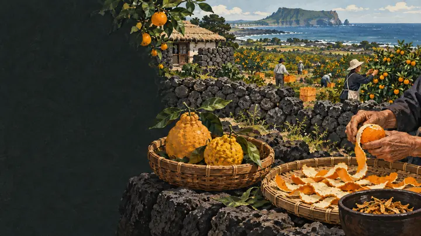
감귤은 언제부터 제주를
대표했을까?
귀한 진상품에서 섬의 산업이 된 과일
도감 읽기 ↗THE COMPLETE COVER ARCHIVE
서른네 편을
한눈에 봅니다
처음부터 이어온 작은 표지 모음을 페이지 마지막에 그대로 남겼습니다. 표지를 선택하면 해당 도감으로 이동합니다.